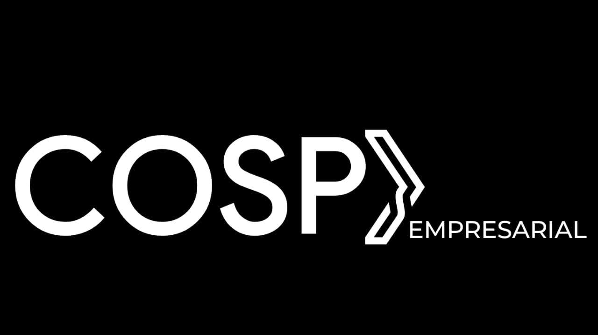
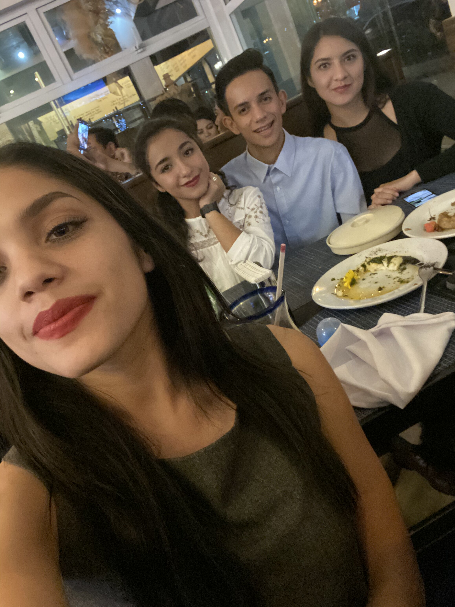
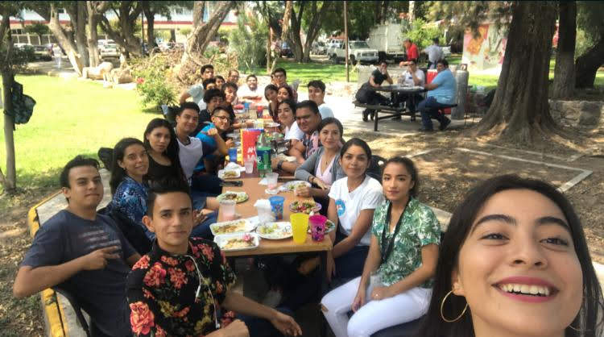

Todo comenzó cuando unas personas fueron a mi secundaria a entregar folletos sobre la Escuela Politécnica de Guadalajara, nos hablaron un poco de las carreras y las que más me llamo la atención fue la de informática, siempre me agrado la idea todo lo referente a las computadoras y desde que dijeron que tenían esa carrera yo pensé “Ya sé a qué preparatoria hare tramites”, cuando se acercó la fecha para hacer los tramites yo estaba súper segura que quería hacer los tramites al poli y a informática.
Nunca olvidare la emoción que sentí cuanto quede en el primer intento, pero cuando vi el horario casi llore porque me había tocado en la tarde jajaja, mi primer día de clases llegue tarde (como siempre) y ya no había bancas desocupadas así que unos compañeros del salón fueron a otro salón a pedir bancas. La primera persona que conocí fue a Omar y desde el inicio fuimos muy buenos amigos y después los dos le comenzamos a hablar a Samantha y a Perla y así fue como todos nos hicimos muy buenos amigos, cada proyecto lo hacíamos juntos y así fue como nació COPS.
COSP es más que un equipo de trabajo, para mí son una familia que jamás olvidare y que cada uno tiene una parte importante en mi corazón.

Omar, bueno amigo que no puedo decir de ti
Tú fuiste el primero que me escucho y me apoyo en cada decisión y admiro la gran inteligencia que tienes y que jamás te dejas derrotar por nada ni nadie, eres una persona súper maravillosa que brillará en la vida y que en cada instante podrá contar conmigo.
Perla, jaja la que siempre discute, en definitiva, eres una pieza esencial en COSP y de ti aprendí muchas cosas, pero una muy especial es que siempre nos demostraste que no importa lo difícil que se pongan las cosas, siempre debemos esforzarnos más para lograr todo lo que nos proponemos
BUENOOOO siempre dejo lo mejor para ti
Sam, podría decir tantas cosas de ti hermosas, pero ese no es el punto aquí.
Tú siempre demostraste de lo que eres capaz y nunca dejaste que nada ni nadie te quitara las ganas de cumplir tus metas, eres una persona maravillosa y estoy segura que brillaras en cada cosa que haces, tu nos enseñaste a nunca dejarnos caer ante ninguna situación y siempre mirar hacia adelante espero estar apoyándote en cada decisión que tomes y estar en cada logro que cumplas, en definitiva, COSP no sería posible sin tus conocimientos.
Eres pieza importante en la persona que me he convertido, cada día me demuestras lo que realmente es importante y lo que no es, de ti aprendí demasiadas cosas, te agradezco todas las veces que me escuchaste y me apoyaste en cada decisión que tome, todos los consejos que me diste y agradezco encontrarte en mi vida
Podría seguir escribiendo cada una de las virtudes que posees, pero tú sabes de todo lo que eres capaz y lo importante que eres en mi vida.
Al grupo de 8°A, por ser parte de esta bonita etapa de nuestras vidas. Cada uno de ellos demostró de lo que eran capaces y los maravillosos seres humanos que son. He compartido experiencias positivas a lo largo de estos cuatro años y solo me queda agradecerle a cada uno de ellos por formar parte de esta historia.
HOLA